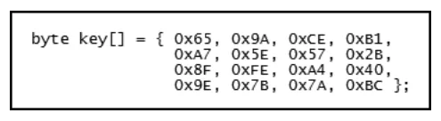
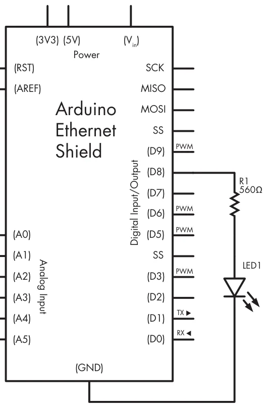
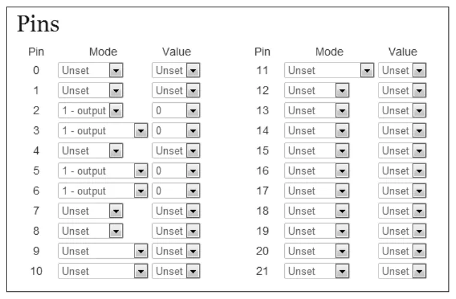

Before starting your first Teleduino project, you must register with the Teleduino service and obtain a unique key to identify your Arduino. To do so, visit https://www.teleduino.org/tools/request-key/ and enter the required information. You should receive an email with your key, which will look something like this: 187654321Z9AEFF952ABCDEF8534B2BBF.
Next, convert your key into an array variable by visiting https://www .teleduino.org/tools/arduino-sketch-key/. Enter your key, and the page should return an array similar to that shown in Figure 19-6.

Each key is unique to a single Arduino, but you can get more keys if you want to run more than one Teleduino project at a time.
The Hardware
Here’s what you’ll need to create this project:
- One USB cable
- One network cable
- One Arduino Uno and Ethernet shield, or one Freetronics EtherTen
- One 560 Ω resistor (R1)
- One breadboard
- One LED of any color
Assemble your hardware and connect an LED to digital pin 8, as shown in Figure 19-7.

The Sketch
Teleduino projects use only one sketch, which is included with the Teleduino library. Here’s how to access the sketch:
- Download and install the Teleduino library from https://www.teleduino.org/ downloads/.
- Restart the Arduino IDE and select File4Examples4Teleduino3284 TeleduinoEthernetClientProxy.
- You should now see the Teleduino sketch. Before uploading it to your Arduino, replace the default key with your key array. The variable you need to replace should be on line 36 of the sketch. Once you’ve replaced it, save the sketch, and then upload it to your Arduino. Now connect your hardware to the network and watch the LED. After
a minute or so, it should blink a few times and then rest. The number of blinks represents the status of the Teleduino service, as shown in Table 19-1.
| Number of blinks | Message |
|---|---|
| 1 | Initializing |
| 2 | Starting network connection |
| 3 | Connecting to the Teleduino server |
| 4 | Authentication successful |
| 5 | Session already exists |
| 6 | Invalid or unauthorized key |
| 10 | Connection dropped |
If you see five blinks, then another Arduino is already programmed with your key and connected to the Teleduino server. At 10 blinks, you should check your hardware and Internet connections. Once the Arduino has connected, it should blink once every 5 seconds or so. Because the status LED is controlled by digital pin 8, you can’t use that pin for any other purpose while you’re using Teleduino.
Controlling Your Arduino Remotely
To control your Teleduino remotely, you can use any device with a web browser. The command to control the Arduino is sent by entering a URL that you create: http://us01.proxy.teleduino.org/api/1.0/328.php?k=<YOURKEY> &r=setDigitalOutput&pin=<X>&output=<S>.
You’ll need to change three parameters in the URL: First, replace <YOURKEY> with the long alphanumeric key you received from the Teleduino site. Next, replace <X> with the digital pin number you want to control. Third, change the <S> to 0 for LOW or 1 for HIGH to alter the digital output. For example, to turn digital pin 7 to HIGH, you would enter: http:// us01.proxy.teleduino.org/api/1.0/328.php?k=<YOURKEY>&r=setDigitalOutput& pin=7&output=1.
After the command succeeds, you should see something like the following in the web browser:
{"status":200,"message":"OK","response"
{"result":0,"time":0.22814512252808,"values":[]}}If the command fails, you should see an error message like this:
{"status":403,"message":"Key is offline or invalid.","response":[]}You can send commands to change the digital pins HIGH or LOW by modifying the URL. After you have created the URLs for your project, bookmark them in your browser or create a local web page with the required links as buttons. For example, you might have a URL bookmarked to set digital pin 7 to HIGH and another bookmarked to set it back to LOW.
In some situations, the status of your Arduino outputs could be critical. As a fail-safe in case your Arduino resets itself due to a power outage or other interruption, set the default state for the digital pins. With your project connected to the Teleduino service, visit https://www.teleduino.org/tools/ manage-presets/. After entering your unique key, you should see a screen of options that allow you to select the mode and value for the digital pins, as shown in Figure 19-8.
